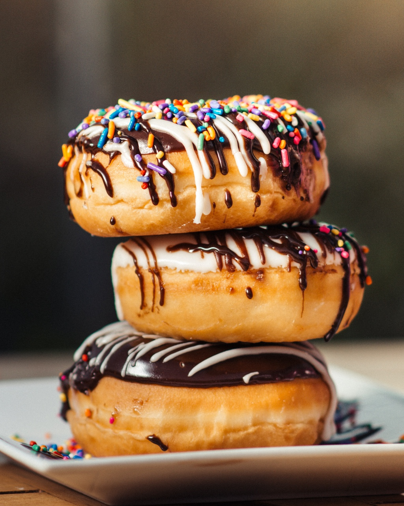
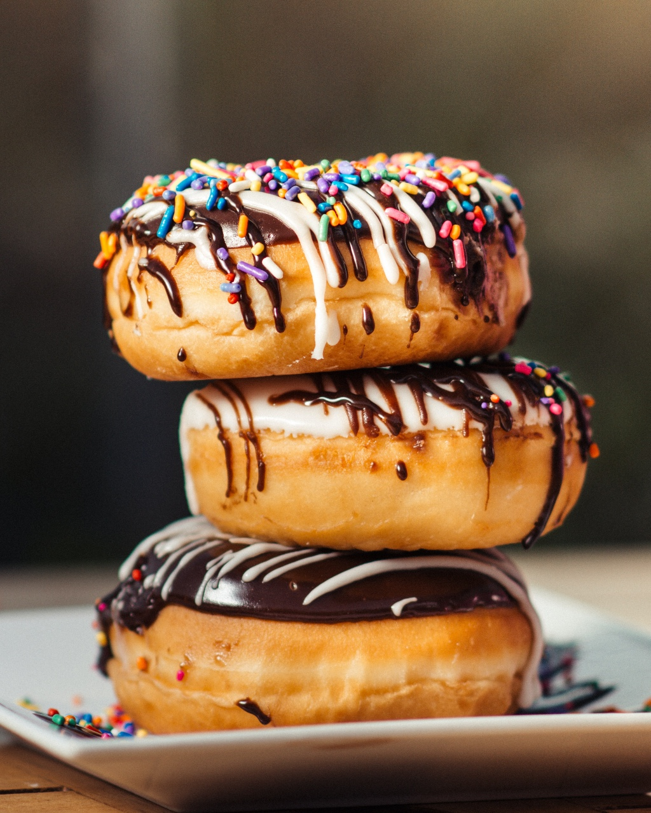

This is a paragraph.
With a linebreak.
 

'What is a doughnut, or donut if you will? Its a small lump of dough, which was originally fried in fat. So you can see where the dough in doughnut comes from. The nut part is actually a different way of saying a small lump. Originally, the name of the treat was dough boy. Donut is a simplification of the original spelling, and as such its completely in the spirit of the American version of the English language. Noah Webster the godfather of American lexicography was a strong supporter of spelling reform. If you look at American English and British English today youll see that the former has a strong tendency to prefer the simpler spellings of words.'